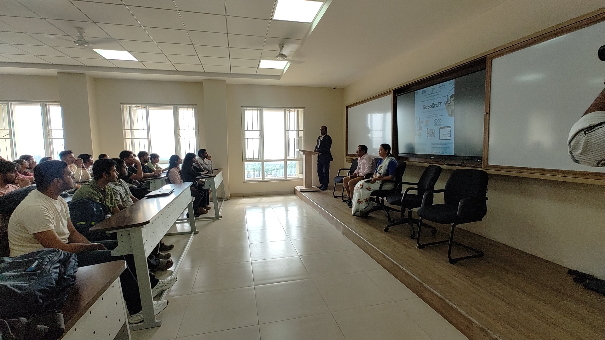
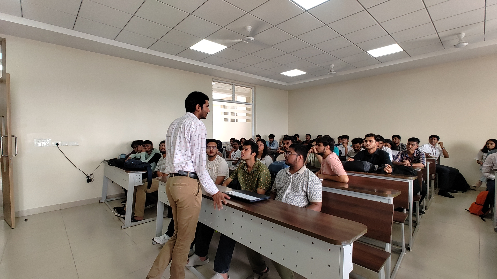

Date: 7th - 8th October 2024
Time: 09:00 AM - 04:00 PM
Location:Classrooms @ A-Block
The Robocraft event, organized by the IEEE RAS Student Branch and Yantrove Club, was held on October 7-8, 2024, at Dayananda Sagar University. It aimed to ignite students' interest in robotics through theoretical and hands-on learning experiences. On Day 1, the event began with speeches by academic leaders emphasizing the relevance of robotics across industries and the importance of hands-on skill development. Participants engaged in projects using Tinkercad for Arduino programming, including simulations of traffic flow, radar systems, and smart irrigation. Exceptional projects, like a piano simulation, showcased creativity and practical applications. The day concluded with a Menti Quiz to reinforce learning. Day 2 focused on hands-on building, where teams constructed basic robotic cars using pre-assembled kits and ESP8266 components under expert guidance. A coding session and practical application helped participants refine their skills.